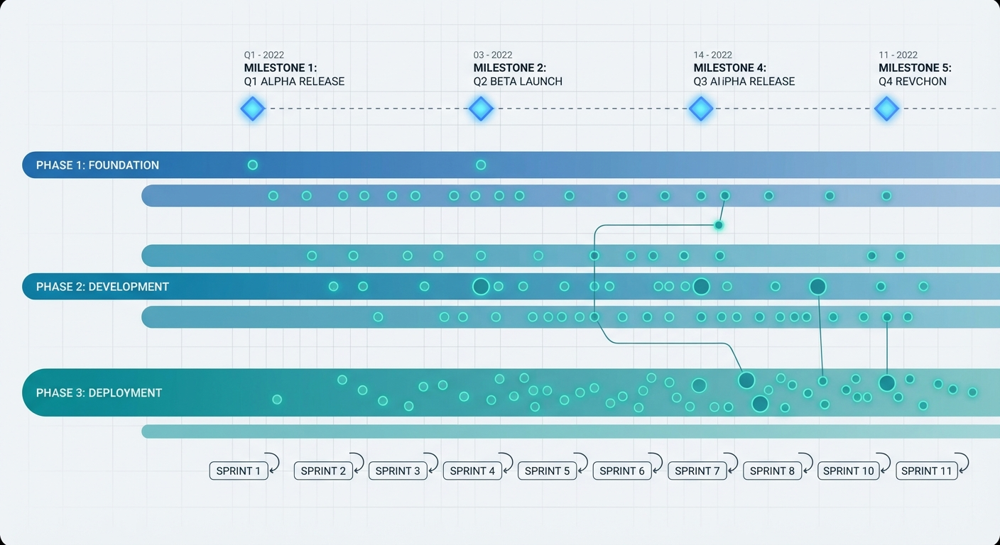

Developer Graph
A graph intelligence layer that connects commits, docs, requirements, and sprints into a navigable system. Built with Neo4j, FastAPI, and temporal queries.
Neo4j + FastAPI
Temporal Slices
Sprint Mapping

Architecture
Git history and documentation are ingested into a Neo4j graph, exposed through a REST API, and rendered as interactive timeline and graph views.
Ingestion
Commits, files, and sprints mapped into typed nodes and relationships.
Graph API
Endpoints for nodes, relations, temporal subgraphs, and sprint mapping.
UI Surfaces
Timeline views, search, and relationship exploration for planning.
Value
Onboarding, forensic history, and strategy grounded in evidence.
Temporal intelligence

Timeline View
Slice the graph by commit ranges or sprint windows.

API Surface
Nodes, relations, search, commit history, and sprint mapping.
Why it matters
Faster onboarding
New contributors see real structure, not just folders.
Planning clarity
Sprint work tied directly to requirements and outcomes.
Forensic insight
Identify why the codebase evolved the way it did.